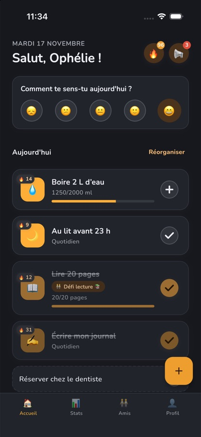

Des petites habitudes,
de grandes séries.
Stidy t'aide à suivre tes habitudes au quotidien, à garder le cap grâce à tes séries et à avancer avec tes amis.
Bientôt sur iOS et Android
Habitudes et tâches, au même endroit
Fini la surcharge mentale
Des habitudes prédéfinies ou personnalisées, avec objectifs chiffrés, plus une liste de tâches ponctuelles. Coche-les chaque jour, chaque semaine ou chaque mois et regarde ta série grandir.

Vois ce que tu accomplis
Chaque petit pas compte
Suis tes séries et ton historique d'un coup d'œil, et note ton humeur du jour pour mieux comprendre ce qui t'aide à aller bien.

Avance avec tes amis
Motivez-vous en groupe et partagez vos exploits
Ajoute des amis, crée des groupes, encouragez-vous et gardez le rythme ensemble. Tu choisis ce que tes amis voient : masque une habitude ou un souvenir à tout moment.

Un journal rien qu'à toi
Pose tes pensées, en toute intimité
Écris tes notes en toute intimité : elles sont chiffrées sur nos serveurs.

Doux le jour, apaisant la nuit
Un design qui te ressemble
Plusieurs palettes de couleurs, un mode sombre et une interface apaisante, en français et en anglais.

Ta vie privée d'abord
Tu peux commencer à utiliser Stidy sans créer de compte. Tes notes de journal sont chiffrées, tu choisis ce que tes amis voient, et nous ne vendons aucune donnée. Tout est détaillé dans notre politique de confidentialité.
Une question ?
Écris-nous à ophelie@stidy.app.